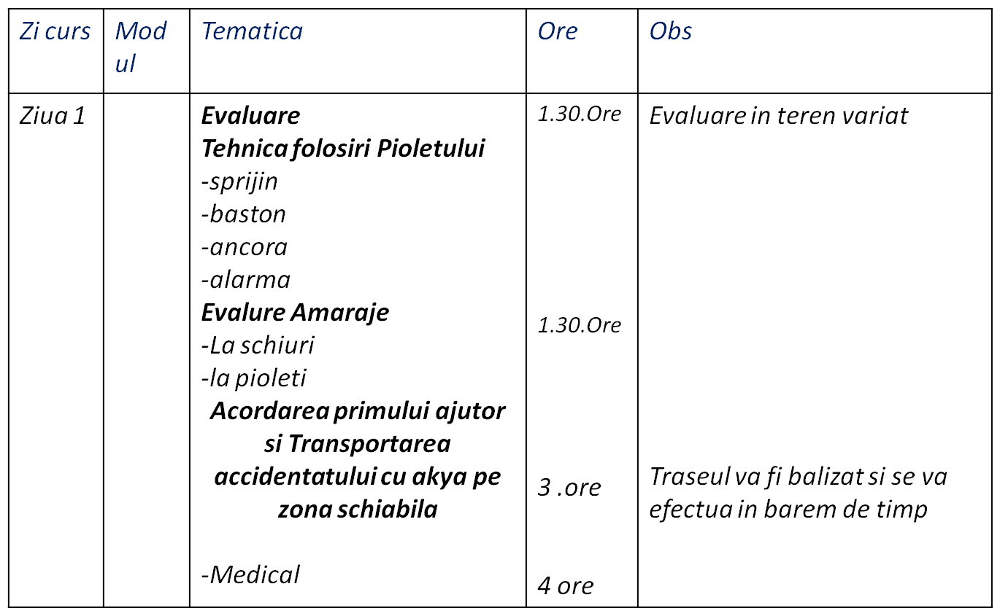
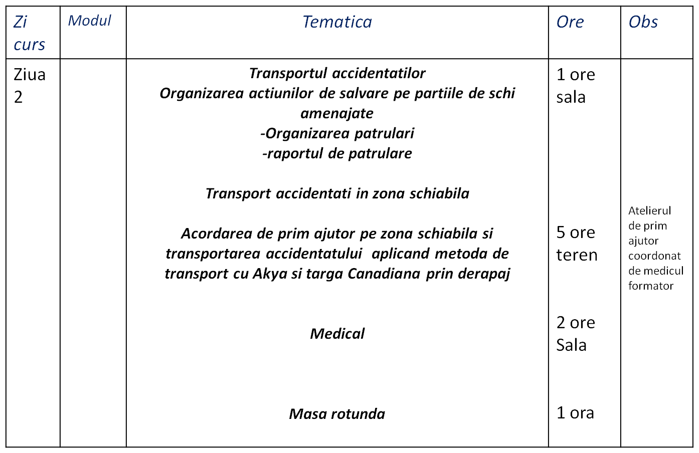
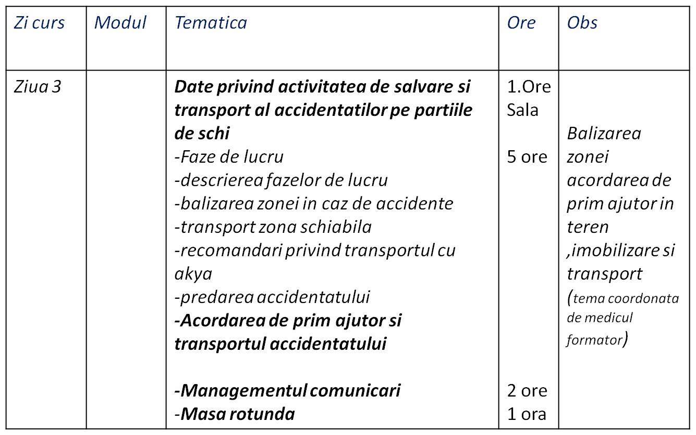
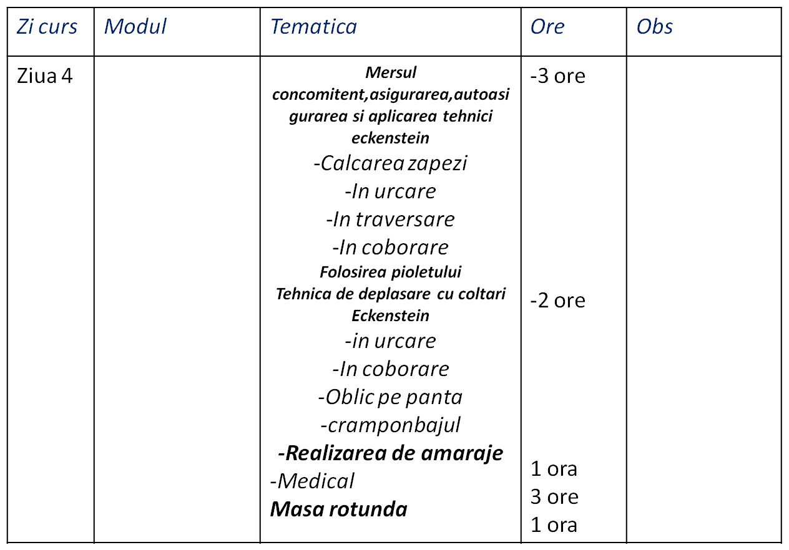
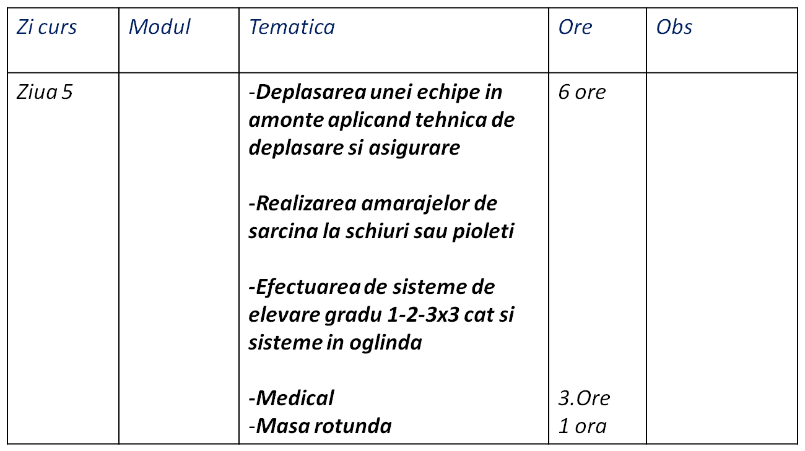
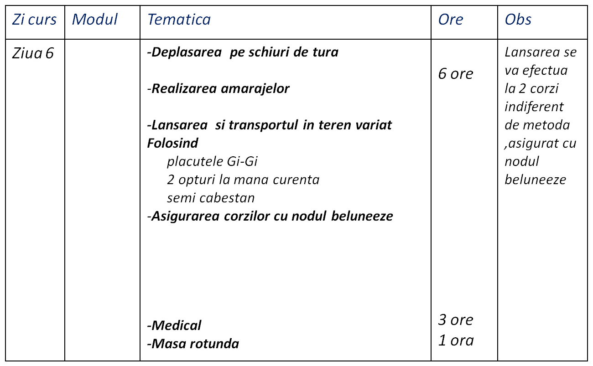
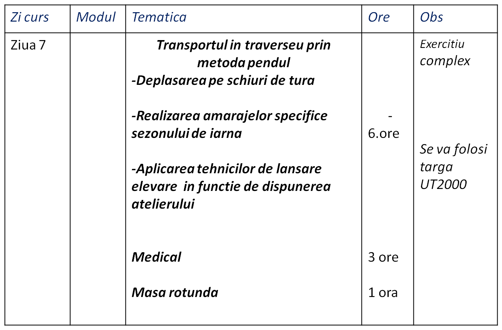
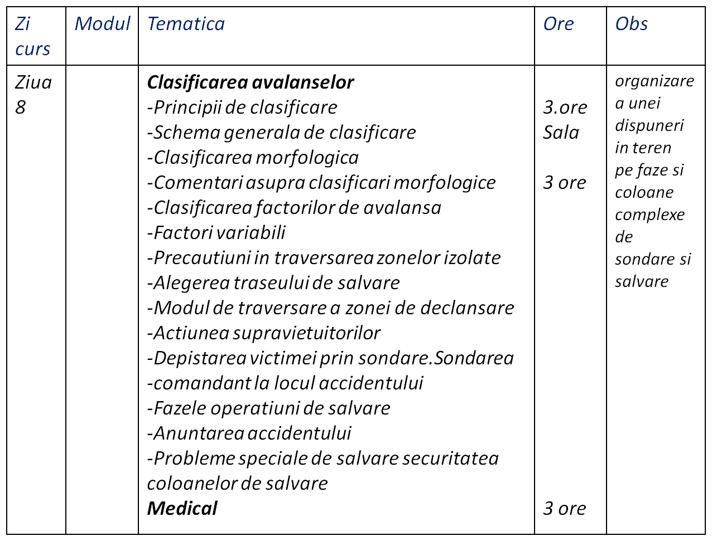
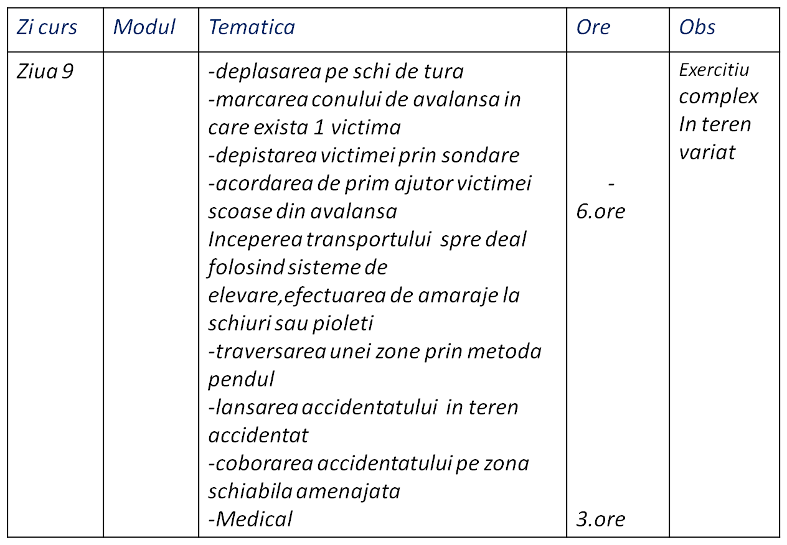
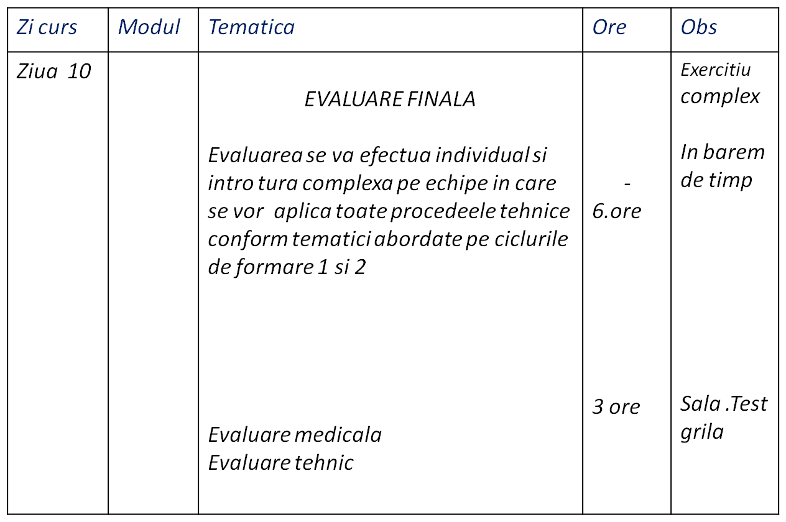

ASOCIATIA NATIONALA A SALVATORILOR MONTANI DIN ROMANIA
PROCEDURI ȘI TEHNICI DE BAZĂ ÎN SALVAREA MONTANĂ
PROGRAM SCOALA IARNA AVANSATI
CICLU 2 IARNA
FORMARE SALVATOR MONTAN
Evaluare intrare in Scoala Nationala Salvamont
etapa 2 iarna
Materiale si noduri specifice sezonului de iarna (prezentare )
Date privind activitatea de salvare si transport al accidentatilor pe partiile de schi
Mersul concomitent,asigurarea,autoasigurarea si aplicarea tehnici eckensteinsul
Transportul in amonte
Elevarea
Transportul pe zona accidentata,lansarea,blocarea sub tensiune si asigurarea corzilor cu nodul beluneeze
Transportul in traverseu
Clasificarea avalanselor








Exercitiu complex de salvare pe timp de iarna


Evaluarea finala